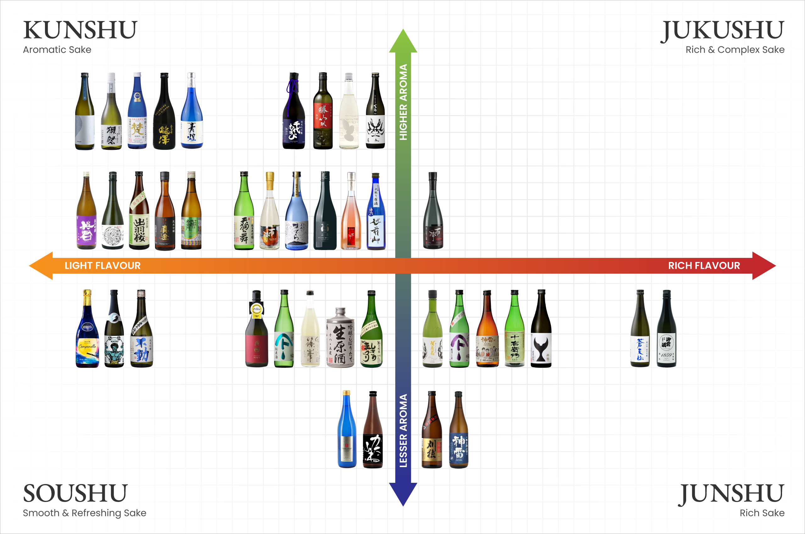

Types of Sake
Sake generally comes in four types, the fragrant and slightly citrusy "aromatic" type known as Kunshu; Soushu, the "smooth and refreshing" type; Junshu, the "rich" type full of strong umami and lastly, Jukushu, the "rich and complex" type characterised by a dry nutty fragrance. Naturally sparkling varieties have also emerged recently to growing popularity. Please refer to the chart below for more information.
